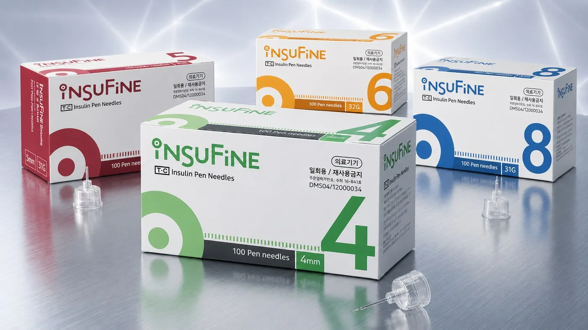
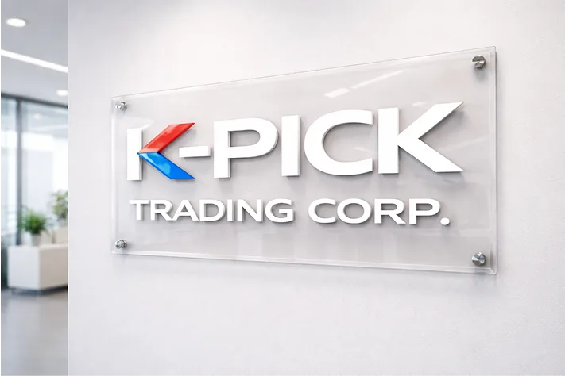

Company founded
K-Pick Trading Corp was founded in Manila and began distributing Korean insulin pen needles.
ISO 13485, CE, and MFDS-certified syringes and pen needles from two Korean manufacturers — a Manila-based company since 2020.
Insulin, single-use, LDS, and filter syringes with matching needles.
31G and 32G pen needles from 4mm to 8mm for consistent delivery.
Reliable products that support dependable care workflows.
Building Partnerships. Delivering Quality. Improving Lives.
Sungshim products reach hospitals, clinics, and pharmacies in 10+ countries across 4 continents.
Two focused Korean medical brands selected for clinical reliability, regulatory compliance, and consistent performance across Philippine healthcare settings.
Sungshim develops injection devices designed for accurate dosing, controlled delivery, and consistent performance. K-Pick Trading Corp is the exclusive Philippine distributor of Sungshim.
Insufine sterile, single-use pen needles are made by Tae-Chang Industrial, a Korean medical needle manufacturer exporting to more than 50 countries. K-Pick Trading Corp is the exclusive distributor of Insufine in the Philippines.

K-Pick Trading Corp. is a Manila-based medical devices company founded in 2020 to bring reliable Korean healthcare products to the Philippine market. We work with Korean manufacturers and share product information with hospitals, clinics, pharmacies, and healthcare professionals. Read more about K-Pick.

K-Pick is building a focused Korean medical distribution platform for the Philippine healthcare market.
K-Pick Trading Corp was founded in Manila and began distributing Korean insulin pen needles.
K-Pick started distributing a wider range of medical supplies for the Philippine market.
Expanded product sourcing and partnerships with Korean manufacturers.
K-Pick became the exclusive Philippine distributor for Sungshim syringes and needles.
K-Pick continues to build partnerships with manufacturers and healthcare institutions while introducing Korean healthcare technologies to the Philippines.
Our partner brands appear in international trade rankings, professional medical supply networks, and practitioner endorsements across the USA, Europe, Australia, and Asia.
Tae-Chang Industrial, the maker of Insufine, ranks as South Korea’s #1 exporter of insulin pen needles by shipment count — supplying markets in more than 50 countries worldwide.
“High quality products have earned an excellent reputation from domestic and overseas customers.” Sungshim products are supplied to hospitals, clinics, and pharmacies in 10+ countries across 4 continents.
K-Pick connects Korean medical device manufacturers with the Philippine healthcare community.
Working relationships with Korean makers of syringes, pen needles, and infusion sets.
Specifications, instructions for use, and device education for healthcare professionals.
Manufacturer ISO 13485, CE, and Korean MFDS certificates available on request.
A Manila team that answers questions from institutions and business partners.
K-Pick receives inquiries from Metro Manila, Luzon, Visayas, and Mindanao, and is building partnerships with healthcare institutions across the country.
About K-Pick Trading Corp and this website.
K-Pick Trading Corp is a registered Philippine company holding a Philippine FDA License to Operate as a medical device distributor.
Registered with the Department of Trade and Industry of the Philippines.
Duly incorporated with the Securities and Exchange Commission of the Philippines.
License to Operate as a medical device distributor issued by the Philippine FDA.
Official exclusive Philippine distributor for the Sungshim and Insufine Korean medical brands.
Additional manufacturer certificates, and the Philippine product registration status of each product, are available on request: compliance@kpicktradingcorp.com
K-Pick welcomes conversations with manufacturers, healthcare institutions, and business partners.
Discuss a Partnership